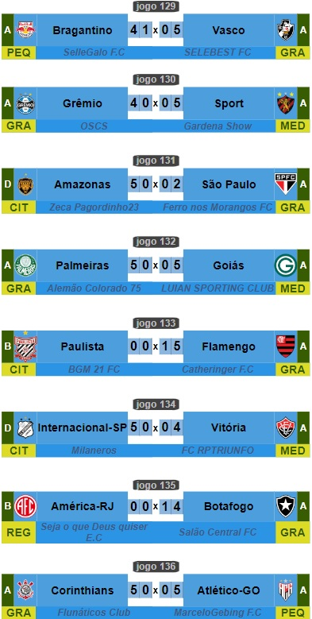
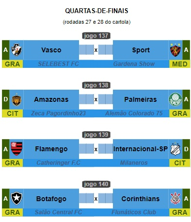

Campeonato de Cartola
A vitória no cartola é o sucesso do seu time!

Redação Cartola - 29/08/2024 - 11h33min
Em duelo empolgante, Vasco da Gama vence o Bragantino do "sellegalo fc" pelo critério da pontuação alta, conquistando uma vitória por 5x4, igualando o placar agregado em 5x5. Com o empate nos critérios, líder Vasco da Gama habilitou-se a enfrentar o atual último campeão nacional, Sport Recife, do "Gardena Show", revivendo a dual rivalidade que tanto monopolizou a disputa do título da divisão de elite do ano passado, com o Vasco encerrando com o vice-campeoanto. 
Outros destaques foram novamente as surprendentes classificações do Amazonas, do "zeca pra Gordinho 23" e da Internacional de Limeira, do "milaneros". A exemplo do que ocorrera na quinta-fase, treinadores voltaram a despachar clubes que tinham toda a vantagem de jogar por dois empates. Neste último final-de-semana, as vítimas foram, respectivamente, São Paulo do "OSCS" e o Vitória do "RP FCTRIUNFO".
Por fim, tivemos o Corinthians, liderado pelo "Flunáticos Club", bicampeão da Copa do Brasil, carimbando participação em mais uma quartas-de-final. Valendo-se da vantagem de jogar por dois empates, o bicho papão "flunáticos" é agora o único dos oito treinadores cassificados para as quartas que está no comando do seu clubes desde a primeira fase da competição. De lá para cá, lista de clubes vitimidas pelo técnico mais vitorioso deste site chegam a seis: Tocantinópolis, Souza, Remo, Volta Redonda, Bahia e Atlético-GO. Próxima fase, cujo primeiro confronto ocorrerá somente na rodada 27, Corinthians medirá forças contra o Botafogo do "Salão Central FC", um dos piores clubes da divisão de elite, na 18ª posição, com o atual treinador não tendo vencido nenhuma partida sob o comando da equipe desde que assumiu na rodada 18, situação esta que só não gerou demissão graças a estabilidade que todo treinador disfruta enquanto "vivo" em Copa do Brasil, Sulamericana ou Liberdatores da América.
Abaixo, os quatro confrontos que, a partir da rodada 27, estarão decidindo uma das quatro vagas para as semifinais. 